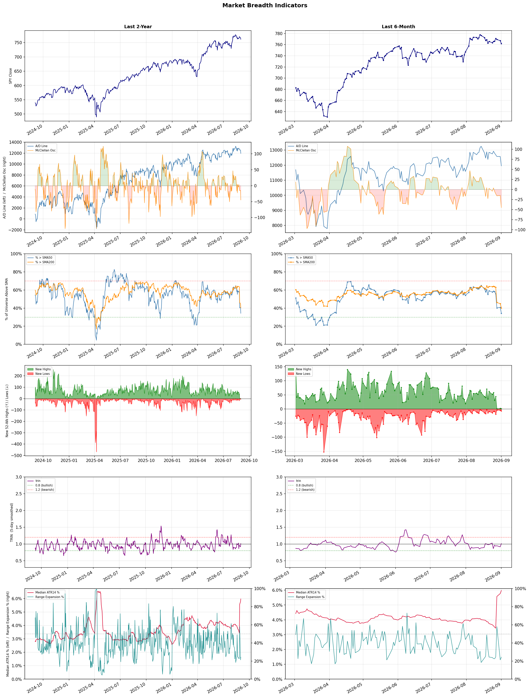

A daily market breadth and sector rotation report for active investors
| Item | Read |
|---|---|
| Regime | Defensive |
| Risk posture | Defensive |
| Universe | 1,331 stocks tracked · 1 new 52-week highs · 30 active swing setups |
| Breadth | only 34.3% of tracked stocks are above SMA50, new lows exceed new highs (7 vs 1), McClellan oscillator (breadth momentum) is negative at -44.9 |
| Leadership | Oil & Gas Refining & Marketing, Diagnostics & Research, and Health Information Services |
| Weakest groups | Solar, Footwear & Accessories, and Electrical Equipment & Parts |
Use this report to prioritize research and chart review; validate entries, stops, liquidity, earnings, and risk before acting.
| Item | Read |
|---|---|
| Primary read | Defensive regime with Defensive risk posture. |
| Research queue | PBF, MPC, DINO, VLO, PSX |
| Leadership focus | Oil & Gas Refining & Marketing, Diagnostics & Research, and Health Information Services |
| Caution list | Solar, Footwear & Accessories, and Electrical Equipment & Parts |
| Review prompt | Check extension risk, chart location, fundamentals, valuation, and earnings before using any research row. |
| Item | Read |
|---|---|
| Primary read | 4 active risk warnings; use screen output as watchlist input only. |
| Bullish screens | CVX, WTI, MRNA, VNOM, EWTX |
| Bearish screens | OPEN, CCL |
| Alerts / levels | Automated trigger, stop, ATR, liquidity, reward/risk, and event-risk levels are pending future enrichment. |
| Review prompt | Open the linked chart, define trigger and invalidation, then check liquidity and event risk independently. |
Risk Posture: Defensive — screen backdrop favors caution; require independent risk review before new exposure
Metric context: McClellan below -50 = elevated selling pressure; below -100 = washout territory. Range Expansion = share of stocks with daily range above their 20-day average. Signal Density = share of tracked names appearing in signal screens.
| Breadth Date | % > SMA50 | % > SMA200 | New Highs | New Lows | McClellan | Median Range | Avg Range | Median ATR14 | Range Expansion | Signal Density |
|---|---|---|---|---|---|---|---|---|---|---|
| 2026-09-01 | 34.3% | 40.2% | 1 | 7 | -44.9 | 3.0% | 3.4% | 6.0% | 24.3% | 15.9% |

Prior comparison date: August 31, 2026
| Metric | Prior | Current | Change |
|---|---|---|---|
| Regime | Defensive | Defensive | unchanged |
| Risk Posture | Defensive | Defensive | unchanged |
| % > SMA50 | 33.3% | 34.3% | +1.0 pts |
| % > SMA200 | 66.7% | 40.2% | -26.4 pts |
| New Highs | 0 | 1 | +1 |
| New Lows | 0 | 7 | -7 |
Top-10 industries entering: Agricultural Inputs, Financial Data & Stock Exchanges, Oil & Gas E&P, and Oil & Gas Integrated. Top-10 industries leaving: Asset Management, Copper, Software - Application, and Software - Infrastructure. New multi-signal long setups: CVX, MRNA, WTI. New multi-signal short setups: CCL, OPEN.
| Status | Tickers | Read |
|---|---|---|
| Added | ARIS, AU, BTG, CCL, CF, CME, CTVA, CVX | New technical screen matches vs prior report. |
| Removed | ADBE, AI, AON, APPS, ARX, ASAN, ASST, AVTX | No longer present in today's technical screen matches. |
| Still Active | BLMN, DINO, DXYZ, MPC, MRNA, NVCR, RBRK, SNY | Appeared in both current and prior reports. |
| Promoted | MRNA, WTI | Model Screen Score improved by at least 15 points. |
| Downgraded | none | Model Screen Score declined by at least 15 points. |
| Direction | Industry | ETF | Prior Rank | Current Rank | Days | Rank Change |
|---|---|---|---|---|---|---|
| Rose | Gold | GDX | 86 | 10 | 42 | +76 |
| Rose | Agricultural Inputs | N/A | 80 | 7 | 14 | +73 |
| Rose | Copper | COPX | 75 | 13 | 42 | +62 |
| Rose | Grocery Stores | N/A | 83 | 23 | 28 | +60 |
| Rose | Oil & Gas Equipment & Services | XES | 78 | 22 | 35 | +56 |
Bull: Gold's rising relative strength can be attributed to increasing concerns about economic instability and currency debasement, as highlighted by headlines discussing the "debasement trade" and the ongoing pressures in the industry. Additionally, with gold prices nearing $4,270 and mining stocks like GDX still 22% below their peak, there is a compelling catch-up opportunity for investors, particularly as experts like VanEck’s Casanova view recent pullbacks as temporary noise rather than a long-term trend. This sentiment, coupled with the growing interest in gold as a safe-haven asset in retirement accounts, reinforces the bullish outlook for gold investments.
Bear: While the rising relative strength of gold may seem promising, it is essential to consider that the current economic landscape is marked by potential overvaluation and speculative behavior in gold mining stocks, as evidenced by GDX being 22% below its peak despite high gold prices. Additionally, the narrative around currency debasement may be overstated, as central banks are likely to tighten monetary policy in response to inflation concerns, which could diminish gold's appeal as a safe-haven asset and lead to a significant correction in both gold prices and mining stocks.
Verdict: The gold industry's rising trend is fundamentally driven by heightened concerns over economic instability and potential currency debasement, prompting increased demand for gold as a safe-haven asset. However, investors should remain cautious of the bear case, which highlights the risk of overvaluation and possible corrections in gold prices and mining stocks if central banks tighten monetary policy in response to inflation. It may be prudent to monitor economic indicators closely and consider diversifying investments to mitigate potential volatility.
Sources: Yahoo Finance, Google News
Bull: The Agricultural Inputs sector is experiencing a rise in relative strength due to a combination of increasing demand for agricultural products and favorable market conditions highlighted by recent headlines. The Motley Fool's mention of "Best Agriculture Stocks to Buy in 2026" suggests a bullish outlook on the sector's growth potential, while Morningstar's analysis indicates that over half of the basic materials sector, including agricultural inputs, is undervalued, presenting significant investment opportunities. Additionally, the strong trading performance of companies like Hektas, despite sector-wide fluctuations, reflects underlying resilience and investor confidence in the agricultural inputs market.
Bear: While the agricultural inputs sector may currently show rising relative strength, the recent drop in CF Industries Holdings' stock amid sector-wide selling indicates underlying volatility and potential overvaluation concerns. Additionally, the optimistic headlines may overlook significant headwinds such as rising input costs, supply chain disruptions, and potential regulatory changes that could negatively impact profitability. The notion of undervaluation in the sector may also be misleading if it fails to account for the broader economic pressures that could dampen demand for agricultural products moving forward.
Verdict: The agricultural inputs sector is likely experiencing a rise in relative strength due to robust demand for agricultural products driven by global food security concerns and favorable market conditions, as highlighted by positive analyst sentiment. However, investors should remain cautious of key risks, including rising input costs and potential supply chain disruptions, which could undermine profitability and lead to increased volatility in stock performance.
Sources: Google News
Bull: The rising relative strength of copper, as highlighted by the recent headlines, is primarily driven by the increasing demand for copper in the electrification and AI sectors, positioning it as a critical material for technologies such as electric vehicles and renewable energy. The narrative that "copper is the new crude" underscores its essential role in the energy transition, while the mention of significant gains in copper-related stocks and ETFs like COPX suggests that investors are recognizing copper's pivotal role in the ongoing technological and energy revolutions, leading to heightened market interest and investment.
Bear: While the narrative around copper's rising demand due to electrification and AI is compelling, it overlooks the potential for oversupply and market volatility driven by geopolitical tensions and economic slowdowns. Additionally, the recent surge in copper-related stocks and ETFs like COPX may be more a reflection of speculative trading rather than sustainable demand, suggesting that the market could be due for a correction as investors reassess the long-term fundamentals of copper in the face of potential economic headwinds.
Verdict: The copper industry's upward trend is fundamentally driven by robust demand from the electrification of transportation and renewable energy sectors, positioning it as a crucial material for future technologies. However, investors should remain cautious of potential oversupply and market volatility stemming from geopolitical tensions and economic slowdowns, which could lead to a correction in copper prices if speculative trading outpaces sustainable demand.
Sources: Yahoo Finance, Google News
Bull: The Grocery Stores sector is experiencing rising relative strength primarily due to its resilience in the face of broader economic challenges, as highlighted by the positive outlook for supermarket stocks despite industry headwinds. The recent Q4 earnings reports, particularly from Albertsons, indicate strong financial performance, while articles emphasizing the potential of food stocks for 2026 suggest a growing consumer preference for grocery retail, particularly in organic and natural segments, as seen with Natural Grocers. This combination of solid earnings and favorable market trends positions the grocery sector as a strong investment opportunity.
Bear: While the grocery sector may currently exhibit rising relative strength, this trend could be misleading due to short-term factors such as inflationary pressures and supply chain disruptions that are temporarily boosting sales. Additionally, the positive earnings reports from companies like Albertsons may not be sustainable, as consumers increasingly gravitate towards discount retailers in an economic downturn, potentially undermining the profitability of traditional supermarkets. Furthermore, the focus on organic and natural products, while trendy, may not be enough to offset the broader challenges of rising costs and changing consumer behaviors in a tightening economic environment.
Verdict: The grocery store sector is experiencing rising relative strength due to its ability to maintain strong financial performance amid economic challenges, driven by a growing consumer preference for grocery retail, particularly in organic and natural segments. However, a key risk lies in the potential for inflationary pressures and supply chain disruptions to undermine profitability, as consumers may shift towards discount retailers in an economic downturn, challenging the sustainability of current growth trends. Investors should closely monitor these economic indicators and consumer behavior shifts to assess the long-term viability of grocery stocks.
Sources: Google News
Bull: The Oil & Gas Equipment & Services sector, represented by the SPDR S&P Oil & Gas Equipment & Services ETF (XES), is experiencing rising relative strength primarily due to a surge in oil prices, which is driving increased demand for oilfield services and equipment. Recent headlines highlight the ETF's strong performance amidst a favorable market environment, with analysts suggesting that investments in this sector can benefit from the oil price surge without direct exposure, indicating a robust outlook for companies like Halliburton and others in the industry. This trend is further supported by reports of specific oilfield services stocks poised to gain, reflecting optimism about the sector's resilience despite broader industry challenges.
Bear: While the rising oil prices may temporarily boost demand for oilfield services and equipment, this sector remains vulnerable to significant headwinds, including geopolitical instability, regulatory pressures, and the ongoing transition to renewable energy sources. Additionally, the recent headlines may overstate the strength of the sector, as many companies are still grappling with high debt levels and operational inefficiencies that could undermine their long-term viability, making the bullish outlook overly optimistic.
Verdict: The Oil & Gas Equipment & Services sector is experiencing a rise in relative strength driven by surging oil prices, which are increasing demand for oilfield services and equipment. However, investors should remain cautious of key risks, including geopolitical instability and the industry's transition to renewable energy, which could undermine long-term growth and expose companies to operational inefficiencies and high debt levels. It may be prudent to selectively invest in firms with strong balance sheets and operational efficiency to mitigate these risks.
Sources: Yahoo Finance, Google News
| Direction | Industry | ETF | Prior Rank | Current Rank | Days | Rank Change |
|---|---|---|---|---|---|---|
| Fell | Airlines | N/A | 13 | 84 | 28 | -71 |
| Fell | Leisure | N/A | 16 | 71 | 35 | -55 |
| Fell | Footwear & Accessories | N/A | 34 | 87 | 35 | -53 |
| Fell | Semiconductor Equipment & Materials | SOXX | 25 | 77 | 28 | -52 |
| Fell | Apparel Manufacturing | N/A | 17 | 68 | 35 | -51 |
Bear: While the bull analyst suggests that the recent decline presents a buying opportunity due to strong underlying fundamentals, the persistent operational challenges and market volatility indicate a more precarious situation for the airline industry. The significant drop in stocks like Southwest Airlines reflects deeper issues, including rising fuel costs, labor shortages, and ongoing geopolitical uncertainties, which could dampen consumer demand and profitability in the long term. Additionally, the falling relative strength trend signals a lack of investor confidence, suggesting that the recovery in travel demand may not be sufficient to offset these systemic risks.
Bull: The recent decline in the relative strength of the airline industry can be attributed to heightened concerns over operational challenges and market volatility, as highlighted by headlines discussing significant stock drops, such as Southwest Airlines' 14% decline. Additionally, ongoing industry scrutiny regarding profitability and consumer demand, as noted in articles from Investor's Business Daily and Yahoo Finance, suggests that investors are cautious amid potential economic headwinds. However, this presents a buying opportunity for discerning investors, as the underlying fundamentals of the airline sector remain strong, supported by recovering travel demand and strategic adjustments by key players.
Verdict: The airline industry's recent decline is primarily driven by operational challenges, such as rising fuel costs and labor shortages, alongside broader market volatility, which have eroded investor confidence. While the bull thesis highlights a potential recovery in travel demand as a buying opportunity, the bear case underscores the risk that these systemic issues could hinder profitability and dampen consumer demand in the long term. Investors should closely monitor these operational factors and geopolitical uncertainties before making decisions in this sector.
Sources: Google News
Bear: While the bull thesis acknowledges macroeconomic pressures, it underestimates the long-term impact of these challenges on consumer behavior and spending patterns. Rising inflation and persistent economic uncertainty are likely to lead to sustained caution among consumers regarding discretionary spending, which could hinder recovery in the leisure sector. Additionally, the optimism surrounding specific stocks may be overly optimistic, as broader industry weaknesses suggest that even well-positioned companies could struggle to maintain growth in a challenging economic environment.
Bull: The Leisure industry is currently experiencing a decline in relative strength primarily due to macroeconomic pressures, such as rising inflation and changing consumer spending habits, which are impacting discretionary spending. Recent headlines highlight the challenges faced by the sector, yet they also indicate optimism with recommendations for specific stocks, such as Travel + Leisure (TNL) and Dave & Buster's (PLAY), suggesting that while the industry is under pressure, select companies are positioned well for recovery and growth as consumer confidence rebounds. This dual narrative reflects a transitional phase where investors may be cautious but are also identifying opportunities within the sector.
Verdict: The leisure industry's decline is fundamentally driven by macroeconomic pressures, particularly rising inflation and shifting consumer spending habits, which are leading to reduced discretionary spending. The key risk from the bear case is that these economic challenges may result in a lasting shift in consumer behavior, potentially stifling recovery and growth even for well-positioned companies like Travel + Leisure and Dave & Buster's. Investors should remain cautious and closely monitor economic indicators and consumer sentiment before making significant commitments in this sector.
Sources: Google News
Bear: While the bull analyst points to innovation and adaptation as potential growth drivers, the reality is that the Footwear & Accessories sector is grappling with significant headwinds, including inflationary pressures and shifting consumer priorities that are likely to persist. The mixed Q1 performance from key players like Boot Barn and Deckers suggests that many brands are struggling to maintain market share, and the emphasis on innovation may be more of a reactive measure to declining demand rather than a proactive strategy for growth. Furthermore, the falling relative-strength trend indicates a broader market skepticism about the sector's ability to rebound, raising concerns about its long-term viability amid ongoing economic challenges.
Bull: The Footwear & Accessories sector is experiencing a decline in relative strength primarily due to macroeconomic pressures affecting consumer discretionary spending, as highlighted in recent earnings reports and analyses. The Q1 results from companies like Boot Barn and Deckers indicate a mixed performance, suggesting that while some brands are innovating and adapting to changing consumer preferences, overall demand remains inconsistent. This sentiment is echoed in headlines that emphasize the need for innovation and strategic positioning to capitalize on the upcoming growth phase, indicating that the sector is currently navigating transitional challenges rather than a robust growth trajectory.
Verdict: The Footwear & Accessories sector is likely experiencing a decline due to persistent macroeconomic pressures, including inflation and changing consumer spending habits, which have led to inconsistent demand and mixed performance among key players. The key risk from the bear case is that brands may be overly reliant on reactive innovation strategies rather than proactive growth initiatives, potentially undermining their long-term viability in a challenging economic environment. Investors should closely monitor consumer sentiment and brand adaptability to gauge the sector's recovery potential.
Sources: Google News
Bear: While rising global bond yields and geopolitical tensions are indeed contributing to the current volatility in the semiconductor sector, the underlying issues of oversupply and waning demand for chips in key markets such as consumer electronics and PCs are more critical. Furthermore, the recent performance of software ETFs suggests a potential shift in investor focus away from semiconductors, indicating that the sector may be facing a longer-term decline rather than a temporary setback. This trend could be exacerbated by increasing competition and pricing pressures, making it difficult for semiconductor companies to maintain margins and growth.
Bull: The Semiconductor Equipment & Materials sector is experiencing a decline in relative strength primarily due to rising global bond yields, which have negatively impacted investor sentiment and led to a selloff in tech stocks, as evidenced by the declines in major players like Intel, NVIDIA, and AMD. Additionally, the recent headlines highlight concerns over geopolitical tensions, such as the U.S.-Iran exchange attacks, which could further exacerbate market volatility and uncertainty in the semiconductor space, prompting investors to seek safer assets like software ETFs.
Verdict: The Semiconductor Equipment & Materials sector is experiencing a decline in relative strength primarily due to rising global bond yields, which have negatively impacted investor sentiment and led to a selloff in tech stocks, as evidenced by the declines in major players like Intel, NVIDIA, and AMD. Additionally, the recent headlines highlight concerns over geopolitical tensions, such as the U.S.-Iran exchange attacks, which could further exacerbate market volatility and uncertainty in the semiconductor space, prompting investors to seek safer assets like software ETFs.
Sources: Yahoo Finance, Google News
Bear: While the bull analyst emphasizes the potential for recovery driven by new trade deals and a shift away from China, it's crucial to recognize that these transitions often come with significant challenges, including increased production costs and supply chain disruptions. Additionally, the apparel manufacturing sector is facing persistent headwinds such as rising labor costs, environmental regulations, and changing consumer preferences towards sustainability, which could undermine any short-term gains and lead to further declines in relative strength. The optimism reflected in recent headlines may overlook these structural issues that could hinder long-term profitability and growth in the sector.
Bull: The Apparel Manufacturing sector is currently experiencing a decline in relative strength primarily due to shifting trade dynamics and sourcing strategies, as highlighted by the recent headlines discussing the revival of textile stocks driven by new trade deals and a pivot away from reliance on China. This transition may have initially created uncertainty, impacting investor sentiment. However, the positive outlook presented in articles like "4 Textile-Apparel Stocks Poised to Gain From Favorable Industry Trends" suggests that these changes could ultimately position the sector for recovery and growth as companies adapt to the evolving landscape.
Verdict: The apparel manufacturing sector's current decline can be attributed to shifting trade dynamics and sourcing strategies, as companies pivot away from reliance on China, which may initially boost investor sentiment. However, key risks remain, including rising production costs, supply chain disruptions, and increasing consumer demand for sustainable practices, which could hinder long-term profitability and growth. Investors should closely monitor these structural challenges while evaluating potential opportunities in the sector.
Sources: Google News
| Industry | Rank | ETF | 7d | 14d | 28d | 42d | Chg 42d | Size | 20D | 60D | Composite | Active Setups |
|---|---|---|---|---|---|---|---|---|---|---|---|---|
| Oil & Gas Refining & Marketing | 1 | CRAK | 4 | 3 | 1 | 1 | 0 | 7 | 13.7% | 41.4% | 0.960 | 0 |
| Diagnostics & Research | 2 | N/A | 1 | 1 | 4 | 2 | 0 | 16 | 11.7% | 31.1% | 0.951 | 0 |
| Health Information Services | 3 | N/A | 3 | 2 | 39 | 4 | +1 | 12 | 22.6% | 35.7% | 0.918 | 0 |
| Oil & Gas Integrated | 4 | XLE | 12 | 12 | 11 | 19 | +15 | 10 | 7.1% | 9.4% | 0.886 | 0 |
| Oil & Gas E&P | 5 | XOP | 8 | 14 | 42 | 47 | +42 | 26 | 12.1% | 8.0% | 0.866 | 1 |
| Biotechnology | 6 | XBI | 6 | 7 | 47 | 15 | +9 | 91 | 13.3% | 25.2% | 0.844 | 1 |
| Agricultural Inputs | 7 | N/A | 29 | 80 | 75 | 44 | +37 | 5 | 15.3% | 9.8% | 0.843 | 0 |
| Insurance Brokers | 8 | N/A | 11 | 5 | 35 | 16 | +8 | 6 | 10.3% | 26.7% | 0.839 | 0 |
| Financial Data & Stock Exchanges | 9 | N/A | 19 | 35 | 51 | 45 | +36 | 7 | 6.8% | 12.7% | 0.839 | 1 |
| Gold | 10 | GDX | 5 | 16 | 74 | 86 | +76 | 25 | 26.3% | 9.2% | 0.832 | 1 |
Rank columns (7d–42d) show the industry's rank that many trading days ago — lower is stronger. Chg 42d = rank change vs 42 trading days ago — positive means the industry moved up. 20D and 60D are the mean stock return within the industry over that period. Active Setups: count of today's swing-trade candidates from this industry appearing across all signal screens.
| Industry | Rank | ETF | 7d | 14d | 28d | 42d | Chg 42d | Size | 20D | 60D | Composite | Active Setups |
|---|---|---|---|---|---|---|---|---|---|---|---|---|
| Solar | 88 | TAN | 87 | 88 | 80 | 80 | -8 | 8 | -19.9% | -43.5% | 0.024 | 0 |
| Footwear & Accessories | 87 | N/A | 88 | 85 | 71 | 42 | -45 | 5 | -15.3% | -17.0% | 0.049 | 0 |
| Electrical Equipment & Parts | 86 | XLI | 69 | 83 | 84 | 82 | -4 | 12 | -15.2% | -36.1% | 0.084 | 0 |
| Chemicals | 85 | N/A | 86 | 87 | 87 | 79 | -6 | 8 | -8.8% | -30.1% | 0.117 | 0 |
| Airlines | 84 | N/A | 85 | 65 | 13 | 38 | -46 | 8 | -20.9% | -5.1% | 0.128 | 0 |
| Utilities - Renewable | 83 | N/A | 66 | 82 | 86 | 85 | +2 | 6 | -9.7% | -30.9% | 0.144 | 0 |
| Specialty Industrial Machinery | 82 | N/A | 71 | 70 | 63 | 83 | +1 | 21 | -8.4% | -13.5% | 0.153 | 0 |
| Utilities - Independent Power Producers | 81 | XLU | 81 | 86 | 88 | 81 | 0 | 5 | -7.5% | -12.3% | 0.170 | 0 |
| Resorts & Casinos | 80 | N/A | 83 | 53 | 68 | 46 | -34 | 6 | -8.3% | -11.4% | 0.174 | 0 |
| Building Products & Equipment | 79 | XHB | 76 | 66 | 49 | 56 | -23 | 8 | -9.0% | -4.0% | 0.179 | 0 |
Rank columns (7d–42d) show the industry's rank that many trading days ago — lower is stronger. Chg 42d = rank change vs 42 trading days ago — positive means the industry moved up. 20D and 60D are the mean stock return within the industry over that period. Active Setups: count of today's swing-trade candidates from this industry appearing across all signal screens.
These are research candidates from top-ranked stocks, capped at five names per industry to avoid over-concentration. Returns shown (60D, 120D, 250D) are historical — they reflect where prices have already moved, not forward expectations. Extension Risk flags names that may require extra patience or a better entry point. They are not buy signals.
Chart: TV = TradingView chart (opens in browser); PDF = local chart file (if downloaded).
| Ticker | Name | Industry | Industry Rank | Market Cap | 60D Hist | 120D Hist | 250D Hist | Extension Risk | Research Reason | Chart |
|---|---|---|---|---|---|---|---|---|---|---|
| PBF | PBF Energy | Oil & Gas Refining & Marketing | 1 | N/A | 76.0% | 91.1% | 170.2% | Extended | Top-ranked in industry; extended | TV |
| MPC | Marathon Petroleum | Oil & Gas Refining & Marketing | 1 | N/A | 43.8% | 79.1% | 116.2% | Constructive | Top-ranked in industry | TV |
| DINO | HF Sinclair | Oil & Gas Refining & Marketing | 1 | N/A | 43.6% | 98.3% | 106.1% | Constructive | Top-ranked in industry | TV |
| VLO | Valero Energy | Oil & Gas Refining & Marketing | 1 | N/A | 40.4% | 68.2% | 139.6% | Constructive | Top-ranked in industry | TV |
| PSX | Phillips 66 | Oil & Gas Refining & Marketing | 1 | N/A | 37.6% | 57.0% | 93.9% | Constructive | Top-ranked in industry | TV |
| TWST | Twist Bioscience | Diagnostics & Research | 2 | N/A | 78.6% | 190.9% | 403.3% | Extended | Top-ranked in industry; extended | TV |
| WGS | GeneDx Holdings | Diagnostics & Research | 2 | N/A | 50.7% | -4.5% | -33.8% | Extended | Top-ranked in industry; extended | TV |
| NTRA | Natera | Diagnostics & Research | 2 | N/A | 44.4% | 61.2% | 89.4% | Constructive | Top-ranked in industry | TV |
| PSNL | Personalis | Diagnostics & Research | 2 | N/A | 41.0% | 105.3% | 254.7% | Extended | Top-ranked in industry; extended | TV |
| OPK | Opko Health | Diagnostics & Research | 2 | N/A | 4.1% | 27.7% | 11.8% | Constructive | Top-ranked in industry | TV |
| TXG | 10x Genomics | Health Information Services | 3 | N/A | 79.0% | 193.2% | 348.6% | Extended | Top-ranked in industry; extended | TV |
| HTFL | Heartflow | Health Information Services | 3 | N/A | 75.0% | 123.2% | 61.8% | Extended | Top-ranked in industry; extended | TV |
| VEEV | Veeva Systems | Health Information Services | 3 | N/A | 56.3% | 47.2% | 3.4% | Extended | Top-ranked in industry; extended | TV |
| TEM | Tempus AI | Health Information Services | 3 | N/A | 34.1% | 18.2% | -18.4% | Constructive | Top-ranked in industry | TV |
| SDGR | Schrodinger | Health Information Services | 3 | N/A | 31.5% | 65.0% | 9.1% | Constructive | Top-ranked in industry | TV |
| EQNR | Equinor | Oil & Gas Integrated | 4 | N/A | 18.6% | 39.1% | 87.3% | Constructive | Top-ranked in industry | TV |
| PBR | Petroleo Brasileiro SA Petrobras | Oil & Gas Integrated | 4 | N/A | 15.9% | 17.9% | 70.9% | Constructive | Top-ranked in industry | TV |
| CVX | Chevron | Oil & Gas Integrated | 4 | N/A | 13.7% | 12.0% | 38.8% | Constructive | Top-ranked in industry | TV |
| CVE | Cenovus Energy | Oil & Gas Integrated | 4 | N/A | 11.8% | 47.9% | 97.5% | Constructive | Top-ranked in industry | TV |
| XOM | Exxon Mobil | Oil & Gas Integrated | 4 | N/A | 8.9% | 12.6% | 47.6% | Constructive | Top-ranked in industry | TV |
These are technical screen matches from existing signal files. They are not trade recommendations. Trigger, stop, ATR, liquidity, reward/risk, and event risk still require separate validation until those inputs are available.
Model Screen Score is weighted by signal count, industry rank, freshness, and setup type. It is not a probability of profit, expected return, or suitability rating. Industry cap: max 3 candidates per industry.
Signal glossary: Momentum Pullback = stock in an uptrend that has pulled back 10–30% and shows re-entry conditions. MA Compression = short- and long-term moving averages converging, often preceding a directional move. Three-Day Up/Down = three consecutive closes in the same direction. New 52Wk High/Low = price reached a new annual extreme.
Chart: TV = TradingView chart (opens in browser); PDF = local chart file (if downloaded).
| Ticker | Industry | Setups | Close | Industry Rank | Signal Count | Model Screen Score | Reason | Chart |
|---|---|---|---|---|---|---|---|---|
| CVX | Oil & Gas Integrated | New 52Wk High; Three-Day Up | 211.05 | 4 | 2 | 93 | Multi-signal; top industry breakout | TV |
| WTI | Oil & Gas E&P | Momentum Pullback; Three-Day Up | 3.85 | 5 | 2 | 93 | Multi-signal; top industry pullback | TV |
| MRNA | Biotechnology | Momentum Pullback; Three-Day Up | 154.27 | 6 | 2 | 93 | Multi-signal; top industry pullback | TV |
| VNOM | Oil & Gas Midstream | MA Compression; Three-Day Up | 45.39 | 11 | 2 | 80 | Multi-signal; compression setup | TV |
| EWTX | Biotechnology | Momentum Pullback | 42.25 | 6 | 1 | 58 | Single-signal; top industry pullback | TV |
| IBRX | Biotechnology | Momentum Pullback | 7.87 | 6 | 1 | 58 | Single-signal; top industry pullback | TV |
| DINO | Oil & Gas Refining & Marketing | Three-Day Up | 103.97 | 1 | 1 | 55 | Single-signal; top industry setup | TV |
| MPC | Oil & Gas Refining & Marketing | Three-Day Up | 383.00 | 1 | 1 | 55 | Single-signal; top industry setup | TV |
| ARIS | Gold | Momentum Pullback | 18.87 | 10 | 1 | 50 | Single-signal; top industry pullback | TV |
| AU | Gold | Momentum Pullback | 108.13 | 10 | 1 | 50 | Single-signal; top industry pullback | TV |
| BTG | Gold | Momentum Pullback | 5.20 | 10 | 1 | 50 | Single-signal; top industry pullback | TV |
| TGB | Copper | Momentum Pullback | 8.44 | 13 | 1 | 50 | Single-signal; pullback setup | TV |
| DXYZ | Asset Management | Momentum Pullback | 31.60 | 14 | 1 | 50 | Single-signal; pullback setup | TV |
| CF | Agricultural Inputs | Three-Day Up | 135.60 | 7 | 1 | 48 | Single-signal; top industry setup | TV |
| CTVA | Agricultural Inputs | Three-Day Up | 87.73 | 7 | 1 | 48 | Single-signal; top industry setup | TV |
| FMC | Agricultural Inputs | Three-Day Up | 11.88 | 7 | 1 | 48 | Single-signal; top industry setup | TV |
| SPGI | Financial Data & Stock Exchanges | MA Compression | 440.21 | 9 | 1 | 45 | Single-signal; top industry setup | TV |
| SNY | Drug Manufacturers - General | MA Compression | 44.37 | 15 | 1 | 45 | Single-signal; compression setup | TV |
| RBRK | Software - Infrastructure | Momentum Pullback | 88.40 | 18 | 1 | 42 | Single-signal; pullback setup | TV |
| NVCR | Medical Devices | Momentum Pullback | 17.38 | 24 | 1 | 42 | Single-signal; pullback setup | TV |
| CME | Financial Data & Stock Exchanges | Three-Day Up | 286.45 | 9 | 1 | 40 | Single-signal; top industry setup | TV |
| DUOL | Software - Application | Three-Day Up | 158.77 | 12 | 1 | 40 | Single-signal; upside pattern | TV |
| BLMN | Restaurants | Momentum Pullback | 9.74 | 37 | 1 | 35 | Single-signal; pullback setup | TV |
| GDDY | Software - Infrastructure | Three-Day Up | 100.55 | 18 | 1 | 32 | Single-signal; upside pattern | TV |
| WIX | Software - Infrastructure | Three-Day Up | 88.38 | 18 | 1 | 32 | Single-signal; upside pattern | TV |
| GO | Grocery Stores | Three-Day Up | 12.11 | 23 | 1 | 32 | Single-signal; upside pattern | TV |
| HLN | Drug Manufacturers - Specialty & Generic | MA Compression | 10.07 | 28 | 1 | 30 | Single-signal; compression setup | TV |
| PGR | Insurance - Property & Casualty | MA Compression | 220.54 | 31 | 1 | 30 | Single-signal; compression setup | TV |
Bearish setups — stocks making new lows or showing persistent downside patterns. Validate carefully before acting.
| Ticker | Industry | Setups | Close | Industry Rank | Signal Count | Model Screen Score | Reason | Chart |
|---|---|---|---|---|---|---|---|---|
| OPEN | Real Estate Services | New 52Wk Low; Three-Day Down | 3.04 | 52 | 2 | 35 | Multi-signal; new-low weakness | TV |
| CCL | Travel Services | New 52Wk Low; Three-Day Down | 23.23 | 54 | 2 | 35 | Multi-signal; new-low weakness | TV |
How To Use This Report
| Use | Purpose |
|---|---|
| Market map | Start with breadth, regime, risk warnings, and what changed since the prior report. |
| Industry scan | Use leading, deteriorating, rising, and declining industries to focus research. |
| Research queue | Treat long-term candidates as names for deeper fundamental, valuation, and chart review. |
| Technical review | Treat bullish and bearish screen matches as watchlist inputs that require independent trigger, stop, liquidity, and event-risk checks. |
| Source follow-up | Use chart links and source files to verify raw inputs before relying on any row. |
What This Report Is Not
| Not | Meaning |
|---|---|
| Investment advice | The report does not evaluate personal objectives, risk tolerance, tax situation, account type, or suitability. |
| Buy/sell recommendation | Named tickers are research candidates or screen matches, not recommendations to transact. |
| Price target | The report does not provide fair value estimates, targets, or expected returns. |
| Trade plan | Trigger, stop, sizing, reward/risk, liquidity, and event-risk review remain separate user work. |
| Performance claim | Model Screen Score is not validated historical performance or a forecast of future results. |
| Item | Note |
|---|---|
| Version | Daily Report Methodology v1 |
| Model Screen Score | Screen-fit rank based on signal count, industry rank, freshness, and setup type. |
| Not predictive proof | The score is not expected return, probability of profit, historical validation, or suitability analysis. |
| Industry ranks | Composite industry ranks use existing daily ranking outputs and historical rank columns when available. |
| Research candidates | Long-term rows are research candidates from ranked stocks and leading industries, with historical returns labeled as historical only. |
| Technical matches | Bullish and bearish rows are screen matches requiring independent chart, trigger, stop, liquidity, and event-risk review. |
| Source | Status | Rows | Path |
|---|---|---|---|
| Market breadth | present | 1253 | breadth_20260901.csv |
| Industry composite rankings | present | 88 | all_industry_composite_20260901.csv |
| Top ranked stocks | present | 205 | top_ranked_composite_20260901.csv |
| All ranked stocks | present | 1331 | all_stocks_composite_sorted_20260901.csv |
| Top momentum pullbacks | present | 1477 | top_momentum_pullbacks_20260901.csv |
| MA compression | present | 1477 | ma_compression_stocks_20260901.csv |
| Three-day up/down | present | 367 | three_day_up_down_stocks_20260901.csv |
| New 52-week members | present | 8 | breadth_new_52wk_members_20260901.csv |
This report is generated from automated technical screens and is for informational and research purposes only. It is not investment advice, a solicitation, or a recommendation to buy or sell any security. Past performance is not indicative of future results. You are solely responsible for your own investment decisions. Consult a licensed financial advisor before acting on any information herein.